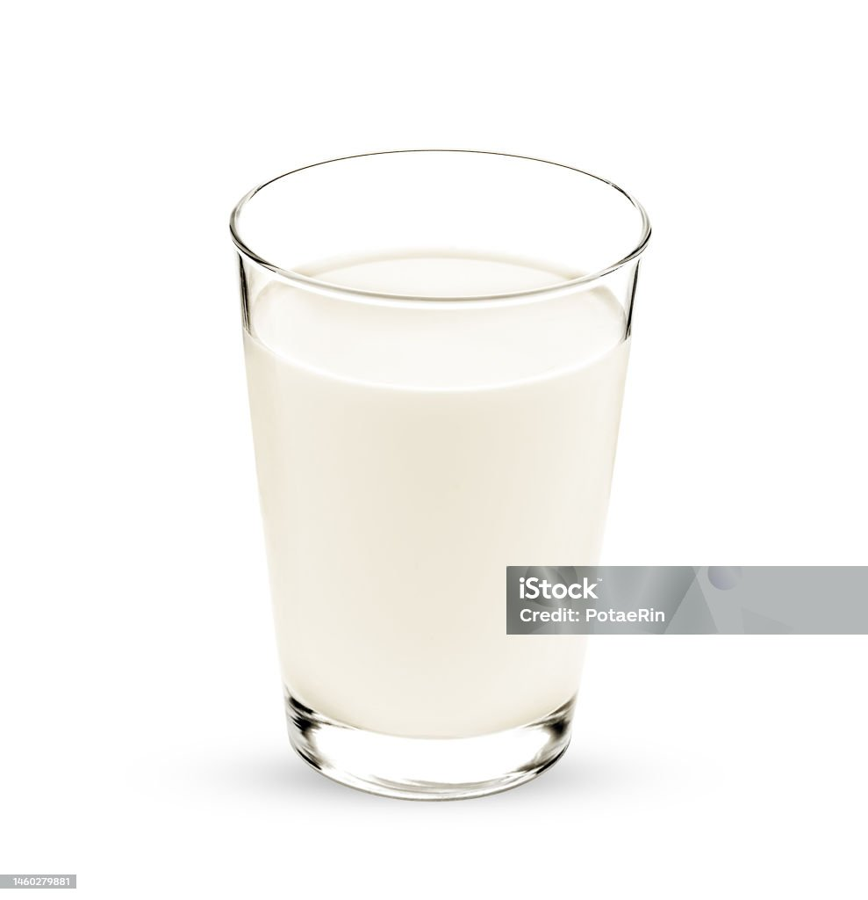
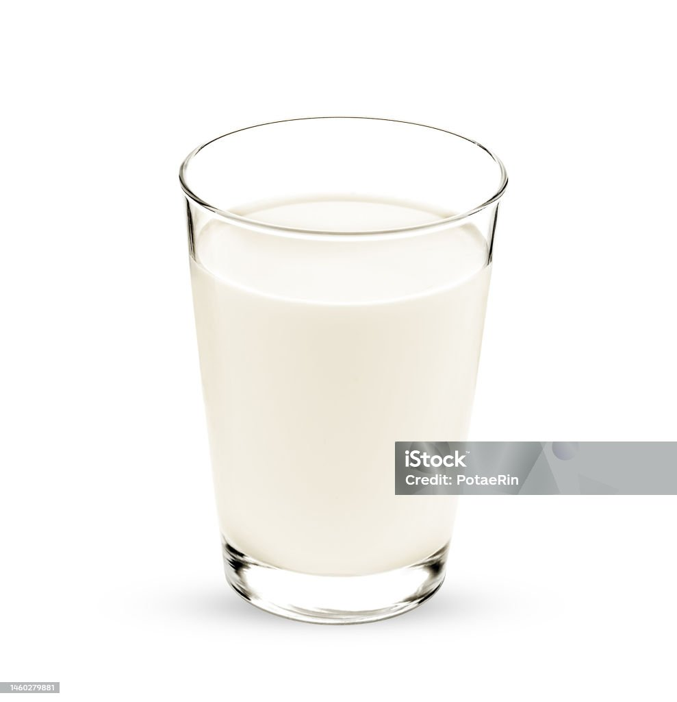
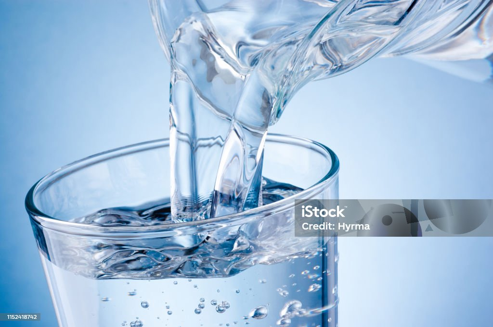

Food
Any nutritious substance that people or animals eat or drink or that plants absorb in order to maintain life and growth.
CLASSES OF FOOD
1. Carbohydrate
2. Protein
3. Fat & Oil
4. Minerals
5. Vitamins
6. Water
Carbohydrate
- Carbohydrates, or carbs, are sugar molecules. Along with proteins and fats, carbohydrates are one of three main nutrients found in foods and drinks. Your body breaks down carbohydrates into glucose. Glucose, or blood sugar, is the main source of energy for your body's cells, tissues, and organs.Bellow are examples: Patatoe, Yam, Rice etc

Protein
- Proteins provide many of the structural elements of a cell, and they help to bind cells together into tissues. Proteins, in the form of antibodies, protect animals from disease, and many hormones are proteins. Proteins control the activity of genes and regulate gene expression. Bellow are example; Egg, Fish, Meat etc


Fat & oil
- Fats and oils contribute to an important part of our diet. They are a source of essential fatty acids and a concentrated source of energy in terms of human nutrition. On the other hand, fats and oils can also provide distinctive flavours to food and provide unique and desirable functions during cooking. For example, oils are the frying media for deep fried food; and when making pastries, fats (shortenings) are added to prevent the flour and other ingredients from clumping together.Bellow are examples: Soya beans, butter, milk etc
 

Minerals
- Minerals are elements or components which are present in food and are required by the body for developing and functioning properly. The Minerals that the body requires are known as essential Minerals and they can be broadly classified into two categories. They are micro and macro or trace Minerals. The amount of the Minerals that are needed for the body does not necessarily indicate its significance. There is a list of 20 chemicals or Minerals which are needed for the different human biochemical processes. Amongst these Minerals, hydrogen, carbon, and oxygen form the major options as they make up 96% of human body weight. Examples are: Salt, vegetables, fresh fruits etc


Vitamins
- Vitamins and minerals are as essential for living as air and water. Not only do they keep your body healthy and functional, they protect you from a variety of diseases. Vitamins and minerals get thrown together, but they are quite different. Vitamins are organic substances produced by plants or animals. They often are called "essential" because they are not synthesized in the body (except for vitamin D) and therefore must come from food.Examples are; cheese, yogurt, cereals etc

Water
- Water is an important component of food although it does not provide any nutrients to us. But water is an important component of food due to many reasons. Water carries all the helpful nutrients and oxygen to all the body parts. It helps in the transportation of the digested food to every cell of the body.
